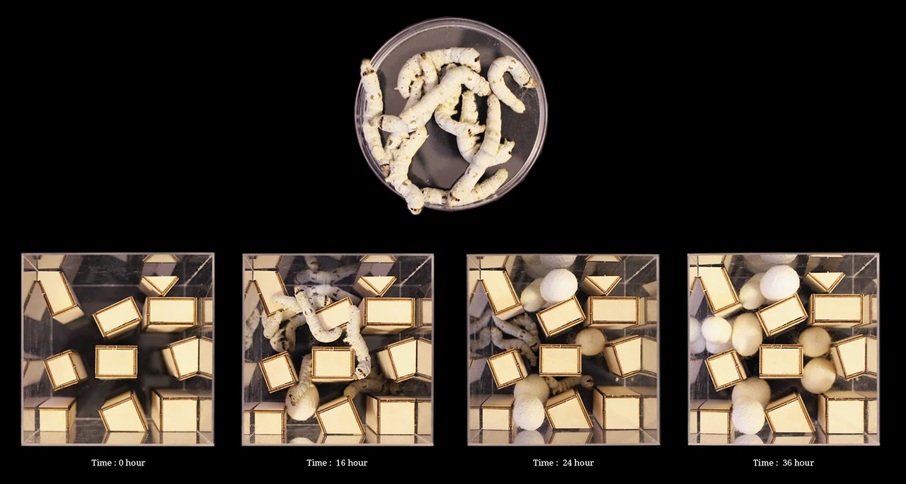
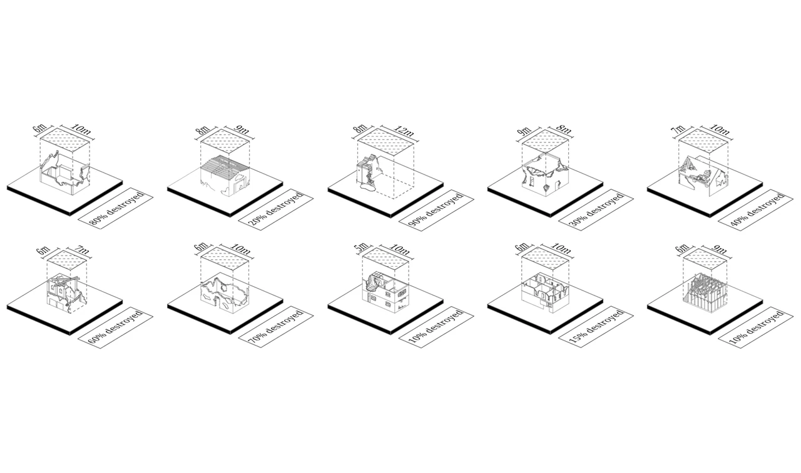
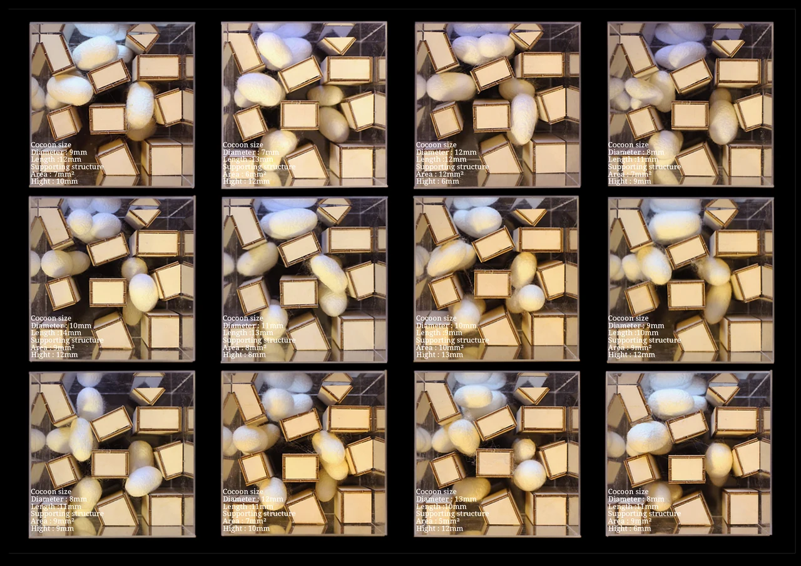
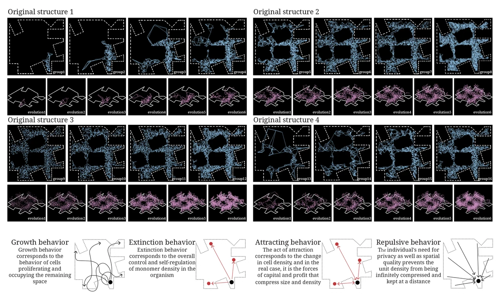
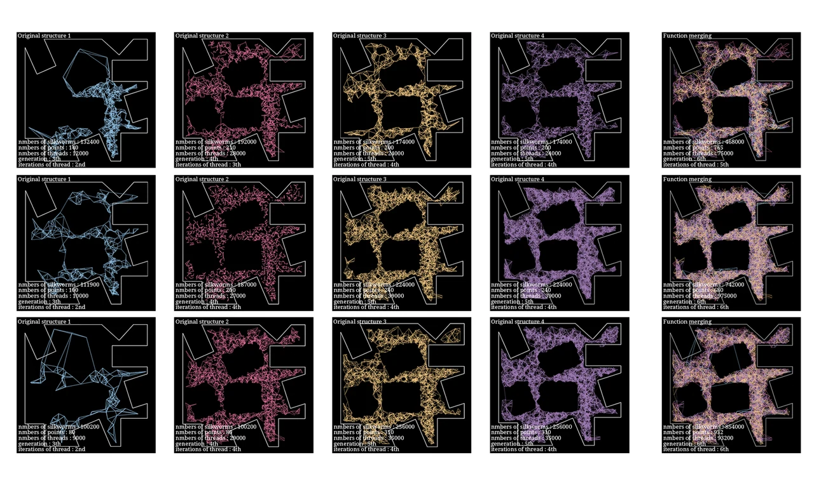
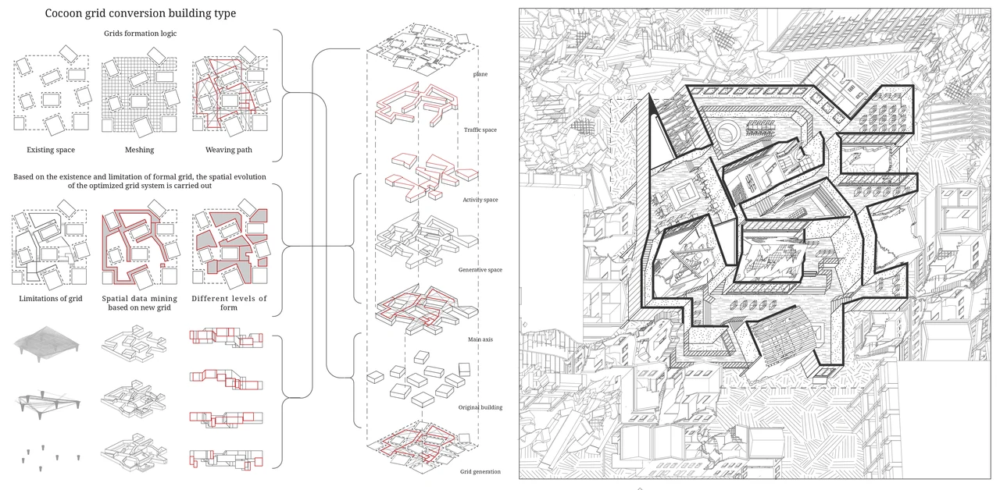
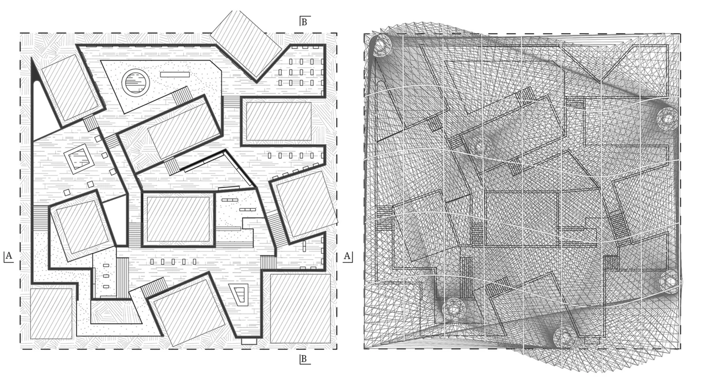
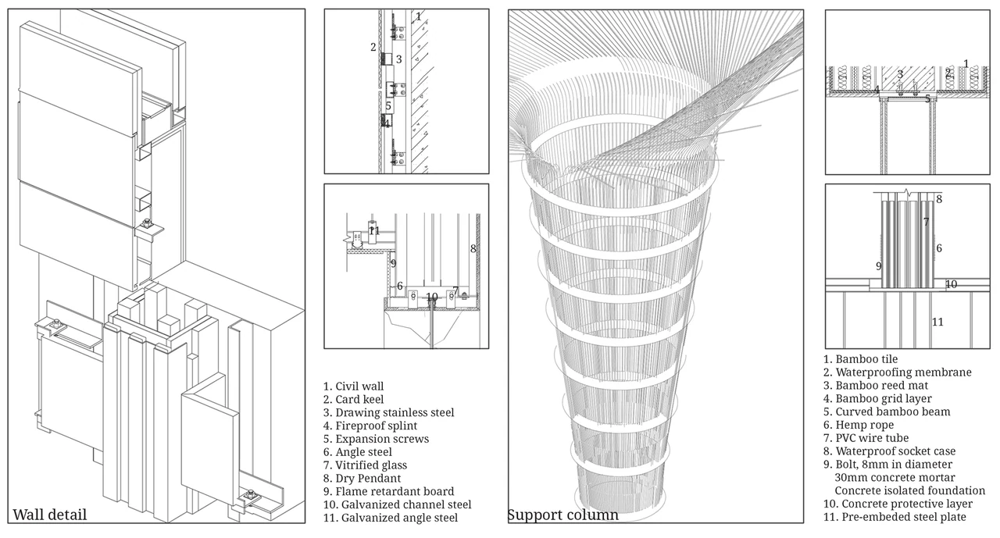
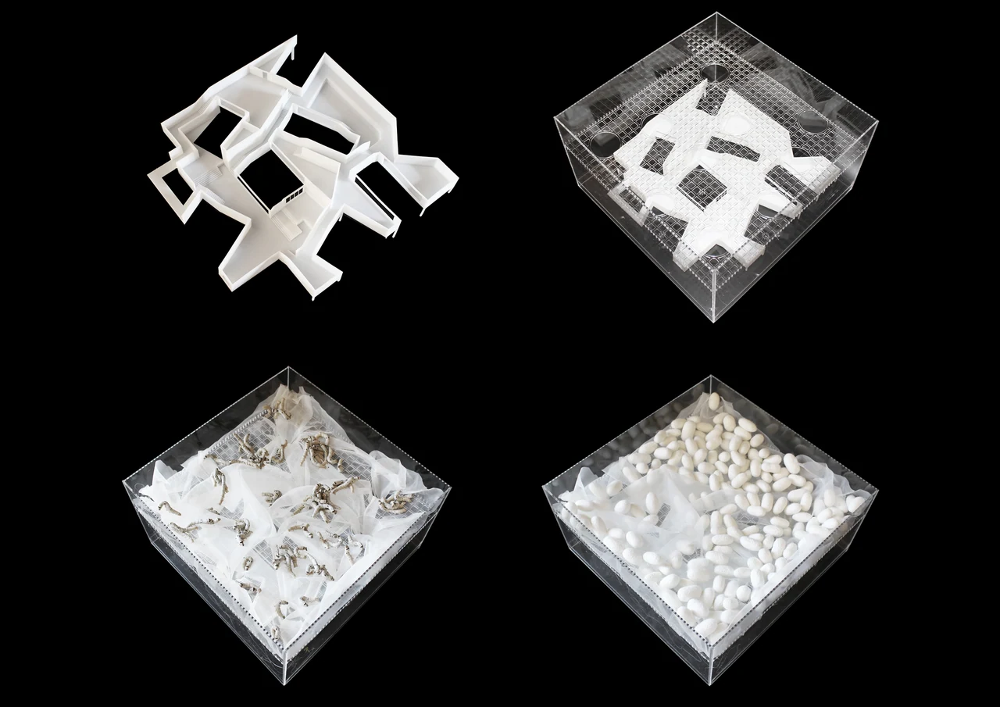

Mending Cracks
On this page
- Introduction
- Silkworm behavioral experiment – Time-based crack occupation
- Damaged buildings as seeds for crack systems
- Cocoon morphology catalog – parameter variations
- Computational crack simulation – four original structures
- Multi-scale thread evolution – crack networks as spatial systems
- Cocoon grid conversion → Architectural spatial system
- Final physical experiment – from digital cracks to biological fabrication
COM–β: Mending Cracks
Personal ProjectTools & Technologies: Agent-based simulation, Python/Processing generative modeling, density-based rule systems, parametric grid translation, 3D printing, biological growth experiments, material assembly prototyping
Introduction
Mending Cracks explores how rupture, occupation, and repair emerge across biological, computational, and architectural systems.
Beginning with the collective behavior of silkworms—organisms that instinctively navigate, occupy, and reinforce irregular structures—the project develops a multi-layered computational model of crack propagation. Through iterative simulations, crack behaviors such as growth, extinction, attraction, and repulsion evolve into spatial logics capable of restructuring damaged buildings.
The project extends across scales:
-
from silkworm micro-behaviors,
-
to computational crack networks,
-
to urban re-weaving,
-
to material construction detail.
Across these layers, cracks are reframed not as failures but as agents of reorganization, producing new pathways, densities, and architectural forms.

Silkworm behavioral experiment – Time-based crack occupation
This experiment begins with silkworms introduced into a confined geometric field assembled from modular blocks.
Over time, their movement, clustering, and cocoon-building behaviors gradually transform the spatial configuration.
0 h → 16 h → 24 h → 36 h reveals:
-
pathways carved by repeated motion
-
zones of dense occupation
-
emergent “patches” analogous to crack thickening
-
voids created by avoidance behavior
The silkworms’ instinctive search for anchoring points produces a natural growth–reinforcement pattern, forming the biological foundation for later computational imitation.

To bridge biological behavior and architecture, a set of partially destroyed buildings is abstracted as “crack seeds.”
These fragmented volumes create irregular boundaries similar to the environments explored by silkworms.
Different levels of destruction vary in:
-
perimeter complexity
-
internal cavity
-
structural instability
Together, these variations provide a diverse dataset of “initial rupture conditions” for computational modeling.

Cocoon morphology catalog – parameter variations
Using measurements extracted from the biological experiment, a parameter catalog is constructed.
Variations in cocoon size, length, density, support surface area, and height reveal how different structural conditions produce different aggregation patterns.
This catalog establishes the quantitative bridge between:
-
biological occupation
-
computational rule-setting
-
architectural massing potential
This turns natural behavior into digitally reproducible parameters.

Computational crack simulation – four original structures
Each destroyed building is translated into a polygonal boundary and processed through a multi-agent crack simulation.
Points behave like digital “silkworms,” executing rules inspired by biological observation:
-
Growth: agents proliferate and fill remaining space
-
Extinction: density self-regulates to prevent overcrowding
-
Attraction: points pull toward boundaries or dense clusters
-
Repulsion: points avoid over-compression and maintain spatial quality
The blue stages show early-phase structural occupation.
The pink stages show stabilized, high-density crack networks—digital analogues of cocoons reinforcing cavities.

Multi-scale thread evolution – crack networks as spatial systems
Accumulated iterations generate progressively differentiated thread networks.
As densities increase and pathways multiply, cracks evolve from:
- thin linear fractures → branching filaments → dense woven fields
-
local deformation → global reorganized topology
The rightmost “function merging” studies demonstrate how independent crack systems begin to overlap, integrate, and produce complex spatial hierarchies—early indicators of architectural program formation.

Cocoon grid conversion → Architectural spatial system
The computational crack patterns are then converted into a grid-based architectural framework:
-
Existing Space
-
Meshing
-
Weaving Path
-
Spatial Mining
-
Hierarchy Formation
The resulting architectural plan retains the porosity and density gradients of biological and computational cracks while becoming inhabitable.


Final physical experiment – from digital cracks to biological fabrication
The process concludes by returning computation to physical growth:
-
A 3D-printed crack-derived geometry is placed into a transparent container.
-
Silkworms are reintroduced into the architectural prototype.
-
Over time, cocoons accumulate along cracks, reinforcing them.
-
The final product becomes a hybrid artifact of digital design and biological fabrication.
Through this loop, cracks cease to represent damage—they become agents of structural repair and spatial generation.
